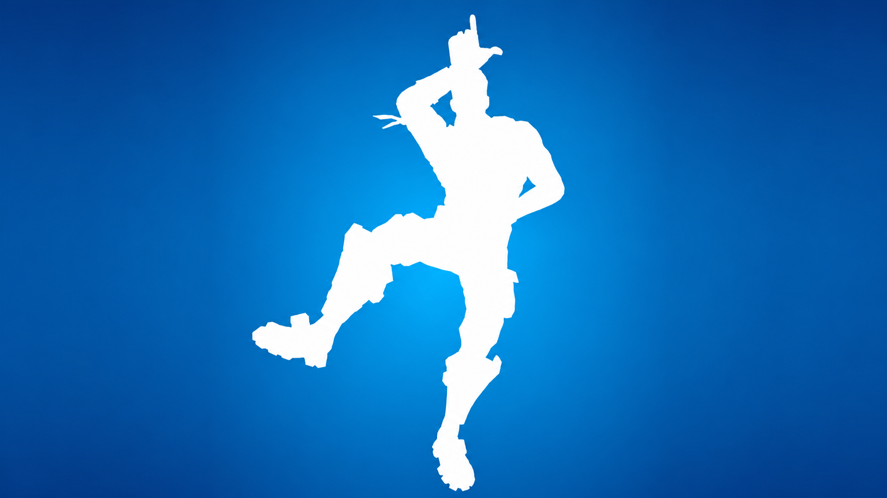
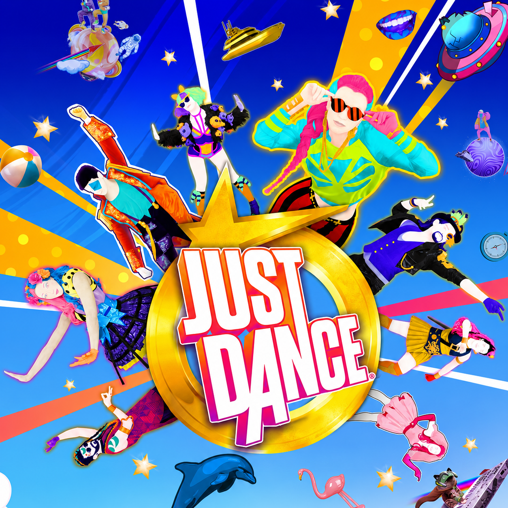
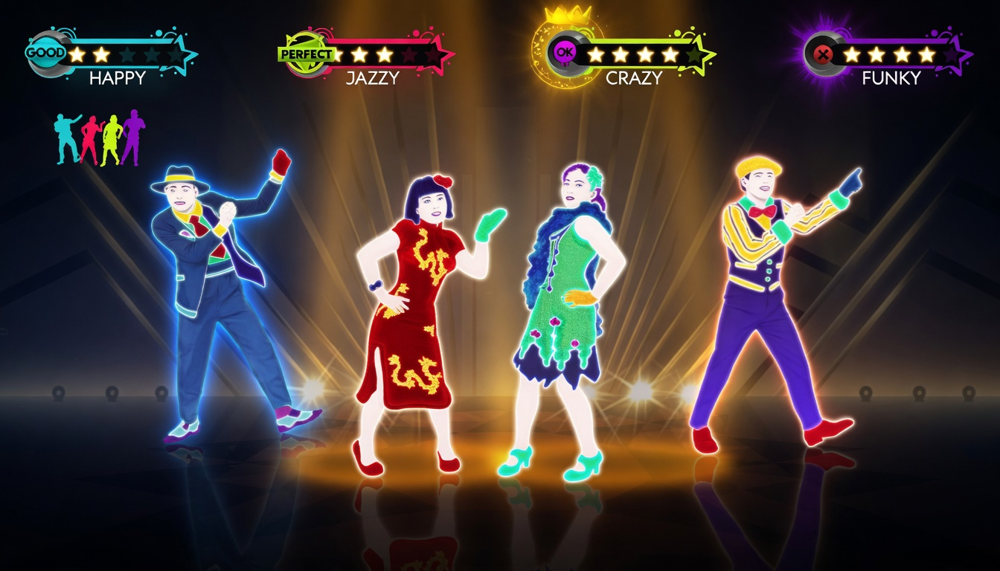
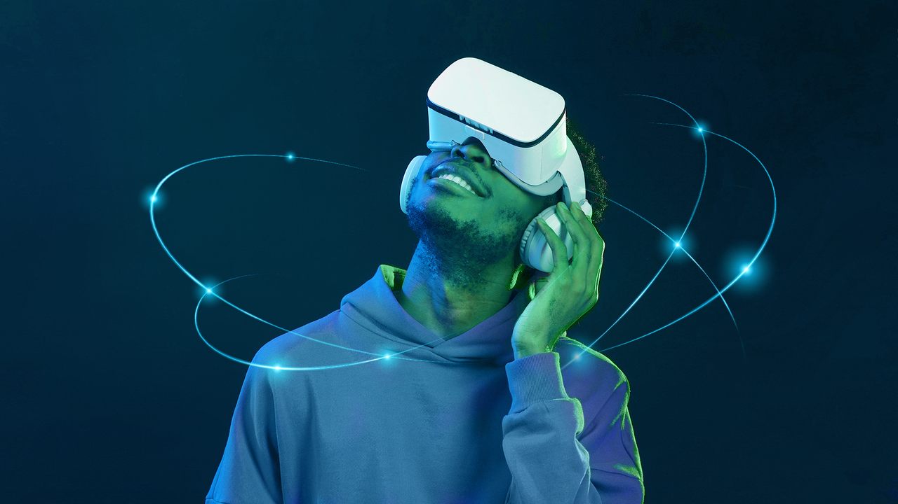

Fortnite Emotes

Just Dance




As danças nos jogos se tornaram uma verdadeira febre mundial. Games como Fortnite popularizaram emotes inspirados em músicas, trends da internet e movimentos icônicos da cultura pop.
Os emotes surgiram como simples animações, mas hoje fazem parte da identidade dos jogadores e movimentam milhões na indústria gamer.
Confira algumas animações dos emotes do Fortinite:
Jogos como Just Dance e Dance Dance Revolution transformaram o corpo do jogador em controle principal, criando experiências extremamente divertidas e competitivas.

Atualmente streamers, youtubers e campeonatos utilizam danças para entretenimento e interação com o público.
Confira alguns vídeos de jogos de danças:

Com realidade virtual e sensores de movimento, as danças nos jogos estão ficando cada vez mais imersivas e tecnológicas.
As novas tecnologias estão tornando os jogos de dança mais realistas, permitindo experiências com realidade virtual, sensores corporais e competições online entre jogadores do mundo inteiro.
Confira alguns vídeos de jogos utilizando Óculos VR(Virtual Reality):
A conexão entre a dança e o combate nos games está cada vez mais forte, provando que o ritmo não serve apenas para pontuar em telas de "Perfect", mas também para definir a estratégia de uma luta. Um exemplo atual dessa tendência é o Dead as Disco, que tem lançamento marcado para 19 de maio na Steam; o título usa a estética das pistas para ditar a dinâmica dos confrontos, transformando a movimentação em uma verdadeira coreografia de sobrevivência (e para quem ficou curioso com essa mistura, rola baixar a demo e testar a mecânica na prática). Isso mostra como o ato de "dançar" nos jogos evoluiu de um simples emote para uma peça fundamental da gameplay.
Confira alguns vídeos famosos de danças gamer:
Dos tapetes de dança aos sensores de movimento: a tecnologia transformou cada pixel em um passo de dança. Prepare seu setup, ajuste o timing e busque o Perfect Combo!
A cultura das danças saiu das telas e dominou o mundo real. Hoje, grandes coreógrafos colaboram diretamente com os games para criar movimentos que viram febre em todas as redes sociais.